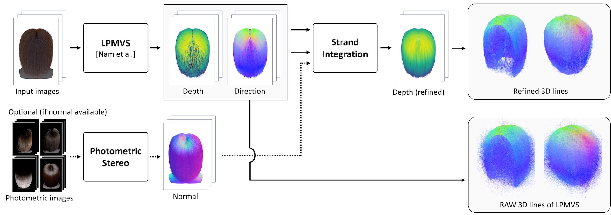
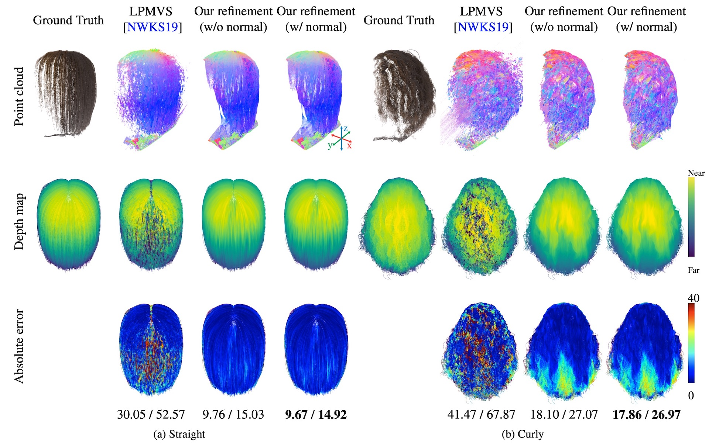
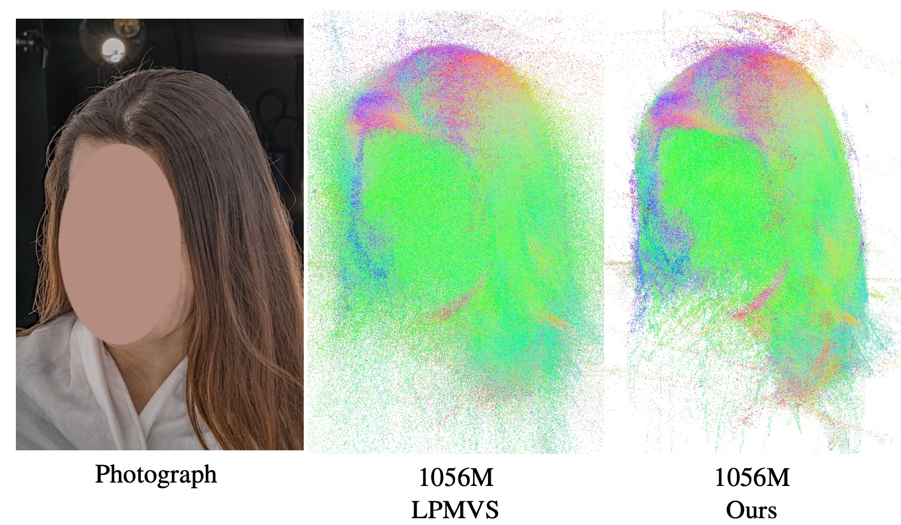

Reconstructing 3D hair is challenging due to its complex micro-scale geometry, and is of essential importance for the efficient creation of high-fidelity virtual humans. Existing hair capture methods based on multi-view stereo tend to generate results that are noisy and inaccurate. In this study, we propose a refinement method for hair geometry by incorporating the gradient of strands into the computation of their position. We formulate a gradient integration strategy for hair strands. We evaluate the performance of our method using a synthetic multi-view dataset containing four hairstyles, and show that our refinement produces more accurate hair geometry. Furthermore, we tested our method with a real image input.
We propose a refinement method for hair geometry by incorporating the gradient of strands into the computation of their position. The basic concept of this method is to harness the position and direction information for improving geometrical coherence. If we move along a 3D line following its direction, we will likely encounter another 3D line that represents another piece of the same strand. By following successive 3D lines, we can determine the shape of an entire strand of hair. We formulate this relationship similar to normal integration but for 3D lines.
The input images are captured under a multi-view camera condition. As a preprocessing, we reconstruct 3D lines (depth and direction) using LPMVS. These 3D lines become the input to our method, Strand Integration, which refines the depth map for each view. While our method can work without any extra input, we can also optionally accept a normal map as an additional input. We can obtain the hair geometry as a set of 3D lines by accumulating.
We evaluated our method using a synthetic data containing four hairstyles. We evaluated with MAE/RMASE of the depth map, and achived lower error compared to LPMVS.
We also evaluated with merged 3D points from all views. Our method reduced the noisy points.
Straight
Curly
Wavy
Wavy Thin
Also in a real capture scenario, our refinement method achieves less noise and denser 3D lines.
BibTex Code Here